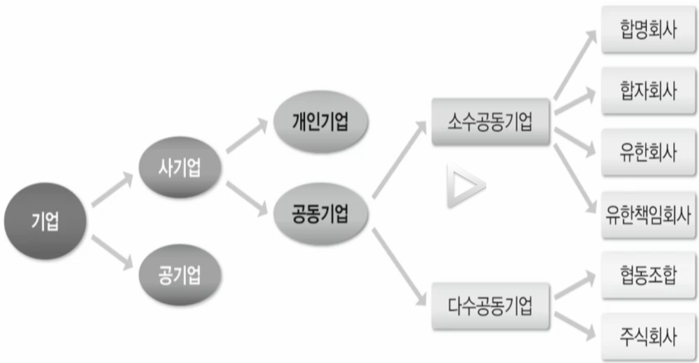

기업의 의미와 유형
목차
기업의 분류
기업의 분류
공동 기업
주식회사
기타 기업 유형
기업 확장
중소기업
기업의 분류

회사: 영리성,사단성,법인성
법적으로 영리성과 사단성과 법인성이라는 특징이 있어야 회사라고 합니다.
영리성: 이익을 추구하고 취득한 이익을 사원에게 배당의 형태로 분배
공기업은 영리를 목적으로 하지 않기때문에 회사라고 엄밀히 이야기 하기 어렵다.
협동조합도 영리를 목적으로 하지 않기때문에 회사라고 엄밀히 이야기 하기 어렵다.
사단성: 일정한 목적을 추구하는 복수의 사원의 결합체
개인 회사는 복수의 사원이 아니기 때문에 회사라고 하기 어렵다.
법인성: 독립된 권리,의무의 귀속 주체
기업도 법인의 자격을 가지고 있어야합니다. 기업 명의로 재산을 가질수 있습니다.
회사기업: 합명회사,합자회사,유한회사,유한책임회사 및 주식화사
개인기업
의미
한 사람이 소유하고 관리하는 기업 - 자영업
차량 세차 서비스, 웹 사이트 구축, 푸드 트럭사업등
지역 사회에서 주민들이 필요로 하는 것을 충족시키기 위해서 출발
전체 기업의 70%이상을 차지
장점
사업의 시작과 철수가 쉽다.
사장이 될 수 있다. (
self-employeed)큰 이익을 기대할 수 있다.
적은 세금 부담
다음 세대가 대를 이어 기업 활동하기 용이
한계
무한 책임
자금의 한계
경영의 어려움 - 마케팅,회계 등등
과도한 시간 투자와 생활 제약
복지에 대한 부담
공동 기업
의미
공동 기업이라는 것은 2명 이상이 모여서 같이 운영하는 기업을 공동기업이라고 합니다.
합명회사
합자회사
유한회사
유한책임회사
주식회사
합명회사
2인 이상의 동업자들이 공동으로 출자하여 운영하는 기업
부채나 손실에 대한 책임도 공동으로 지는데 무한 책임을 지는 것이 일반적
이해관계가 매우 깊은 사람끼리 설립(ex.가족 or 친척)
패션,와인 등 기술의 비법 혹은 법률,회계회사처럼 전문성이 필요한 업종
사원 전체가 소유주이자 경영자
합자회사
합명회사는 책임의 무한성으로 인해 출자라를 찾는 것이 어려움
유한책임사원: 투자 금액 이상의 책임을 지우지 않는 동업자
합자회사: 무한책임사원과 유한책임사원으로 구성된 공동기업
유한책임사원은 경영의 의무도 면제
지분의 양도에는 무한책임 사원 전원의 동의가 필요
유한회사
무한 책임사원이 없이 출자자 전원이 유한책임만 지는 회사
출자자 전원이 유한책임만 짐
지분을 증권화하여 출자자를 공모할 수 없고 지분의 양도는 자유로우나 정관으로 제한 할 수 있음
폐쇄적인 구조로 자본 조달에 한계가 있어 중소규모의 기업에 적합한 소유구조
유한책임회사
특징이 지식이 많은 사람에게 특별한 혜택을 주기 위해서 배려해서 만든 회사
2011년 상법에 도입된 새로운 회사 형태
소유와 경영이 개인에 집중되어 있고 인적자산의 수용이 중요한 지식기반 산업의 중소규모 기업의 설립을 용이하게 하기 위해서 도입
출자자 전원이 유한책임만 지는 점에서는 유한회사와 동일하나 업무집행과 의사결정을 업무집행 사원이 알아서 있다는 점이 유한회사와의 차이
금전과 재산으로 출자는 하나 이익의 분배는 지분과 관계없이 자유롭게 할 수 있어 사원의 인적자원을 활용하는데 유리
지분의 증권화는 금지되고 지분의 양도는 전원의 동의가 필요하나 정관으로 자유롭게 정할 수 있음
공동기업의 장단점
장점 | 단점 |
|---|---|
공동으로 출자하기에 자금의 조달이 용이 사원들이 함께 경영에 참여하여 전문성과 다양한 아이디어를 살려 경영활동을 할 수 있음 어느 정도 자유 시간을 확보할 수 있음 | 무한책임 이익분배의 어려움 파트너간의 의견불일치 청산의 어려움 |
주식회사
의미
다수의 사람으로부터 투자를 받기 위해 설립된 기업
기업이 책임을 지는 증서인 주식을 발행 (
유가증권) - 증권화하여 판매다수의 사람들에 나누어 주고 주식의 액수만큼 투자를 받는 식으로 자본을 조달
다수 공동기업이라고도 불리며 1600년초 네덜란드 동인도 회사가 기원
주식회사는 투자자(주주)와 별개의 법적 지위를 가진 법인
소유자(주주)와 별개로 경영자가 있다는 것 - 소유와 경영이 별개로 나누어 지는 회사
특징
유한책임제 (자신이 가진 주식 한도 내에서만 책임을 진다.)
자본의 증권화 - 소액의 가치를 나타내는 종이로 나눈다.
소유와 경영의 분리 - 주주는 경영에 관심이 없다.
장 단점
장점 | 단점 |
|---|---|
유한 책임 | 초기비용 및 방대한 서류작업 |
대규모 투자 유치 가능 | 특별세 |
규모의 거대화 | 규모 |
용이한 지분 구조 변경과 영속성 | 청산의 어려움 |
능력있는 종업원 확보 | 주주와 이사회의 갈등 가능성 |
소유와 경영의 분리 |
기타 기업 유형
소유 구조에 따라 사기업과 공기업이 있습니다.
공기업
국가 혹은 공공단체가 출자하여 소유하고 경영하는 기업형태
재정수입 - 담배,인삼,소금 독점적인 지배권을 가지고
거대 공익사업 - 국가의 경제체제에 따라 다르다.
사회정책 목적 - 적자를 보더라도 공익으로 진행하는 경우
공기업의 문제: 무사안일태도에 나오는 방만한 경영
협동조합
영리가 목적이 아니기 때문에 회사는 아니다.
경제적으로 약자의 입장에 있는 중소 생산업자나 소비자가 서로 협력하여 경제적 지위를 향상시키고 복지를 도모할 목적으로 공동 출자된 기업
조합 자체의 영리보다 조합원의 상호부조를 목적 - 호조주의(서로돕다)
조합원의 임의 가입,탈퇴가 인정되며 출자액에 관계없이 평등한 의결권을 가짐 - 민생주의
잉여금의 배분은 원칙적으로 조합우너의 이용도에 따름 - 이용주의
프랜차이즈
독특한 제품,서비스 혹은 기술을 보유한 기업이 타 기업들에게 일정 지역에 상호,상표,로고,제품,서비스,경영 노하우등을 사용할 수 있는 권한을 주는 계약을 맺어 운영하는 방식
가입비 ,로열티
프랜차이즈 장단점
장점 | 단점 |
|---|---|
관리,마케팅 및 재정 지원 | 높은 가입비 및 로열티 |
사업확장 용이 | 경영규제 |
개인소유 | 가맹점 통제의 어려움 |
전국적 인지도 향유 | 매각의 어려움 |
높은 성공률 | 프랜차이즈 본부의 부실화 |
기업확장
기업확장의 이유와 방법
기업은 기본적으로 성장에 관한 열망이 존재
인수합병: 유망 산업에 진출하기 위한 손쉬운 방법
합병(merge)은 두 기업이 한 회사로 병합하는 형식으로 기업간 결혼
인수(acquisition)는 한 기업이 다른 기업의 자산과 채무를 매수
합병의 형태
수직합병: 생산과정에 단계가 다른 기업간 합병
ex) 조미료 회사와 사탕수수 생산업체
수평합병: 같은 단계에 있는 두 개 이상의 기업이 합병
ex) 주스 회사와 생수 회사
혼합합병
전혀 관계없는 산업의 기업간 합병
대부분의 합병은 보완적인 관계에 있는 기업 간 발생
카르텔
공식,비공식 협약에 의해 자유경쟁을 배제하고 시장을 통제,지배하여 가격을 유지하고 기업이 독립성을 유지한 채 안정을 도모하려는 시도
트러스트
수평합병 혹은 수직합병을 통해 독립성을 완전히 상실한 하나의 거대 기업으로 변모하여 시장을 지배
곤체른
몇 개의 기업이 독립성을 유지하면서 주식 소유를 통해 결합하는 형태 (삼성같은 구조)
중소기업
기업의 분류는 소유 구조에 따라 분류를 합니다.
기업의 규모에 따라서 하는 방법이 있습니다. 대,중,소기업을 나눈다.
중소기업의 정의
중소기업: 소기업+중소기업
분류 기준은 매우 복잡하여 업종마다 상이
업종에 관계없이 자산총액 5,000억원이하
상호출자제한 기업집단에 속하지 않아야 하는 등의 제한도 존재
중소기업의 중요성
중소기업은 경제발전의 원동력
중소기업은 대기업 경영활동의 기반
대기업에 비해 직장의 안정성이 떨어지고 봉급 수준이 낮다고 알려져 있으나 반드시 그런 것은 아님
연습문제
기업중 회사라고 불리는 기업은 다음 어떤 조건을 만족해야하는가?
영리를 추구해야 한다.
일정한 목적을 추구하는 복수의 사원의 결합체야 한다.
독립된 권리, 의무의 귀속주체가 되어야 한다.
위 세가지를 모두 충족해야 한다.
사원 전체가 소유주이자 경영자인 기업은?
합자회사
합명회사
주식회사
유한책임회사
인적자산의 수용을 용이한 중소기업을 육성하기 위해 만들어진 기업 유형은?
합자회사
유한책임회사
유한 회사
협동 조합